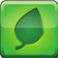
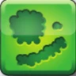
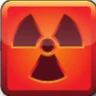
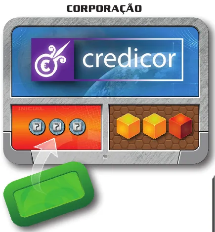
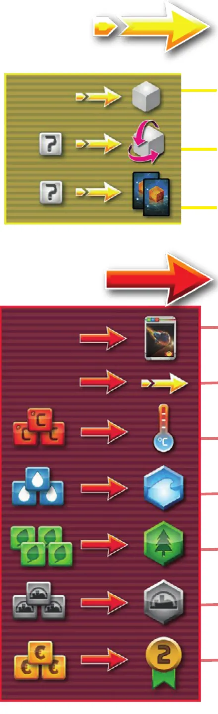
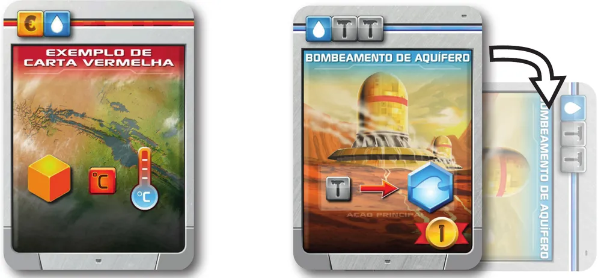
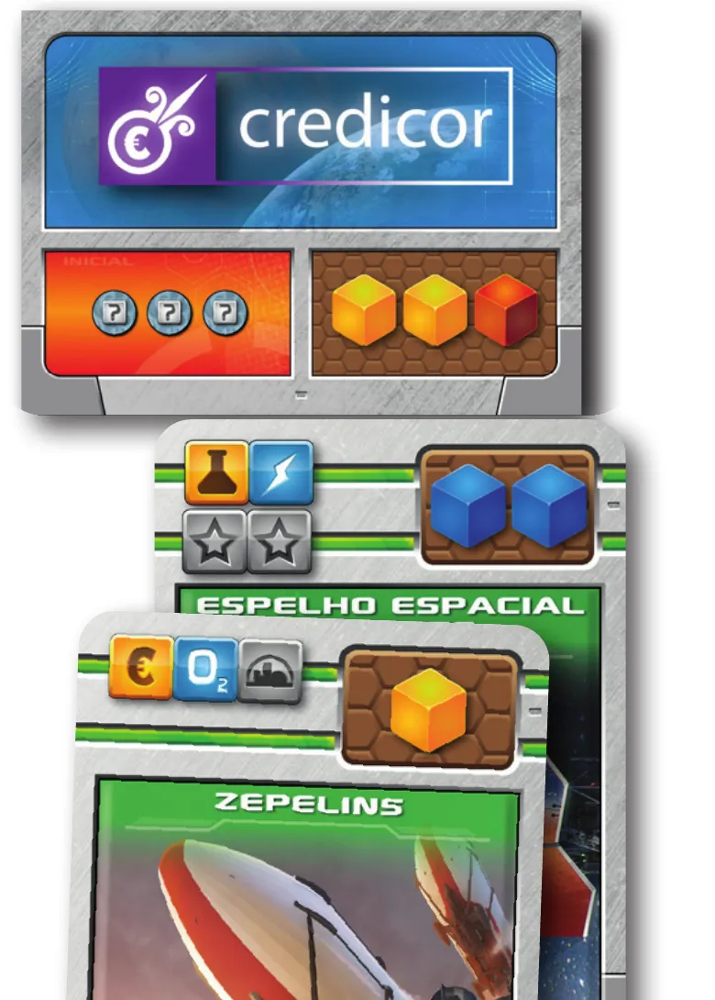
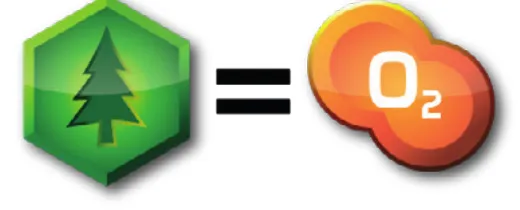
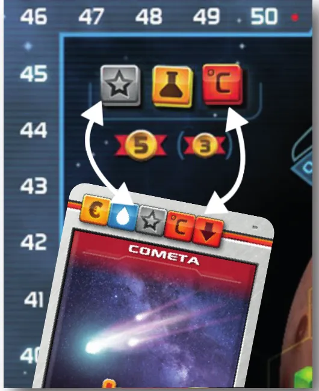

A mesa montada: tabuleiro de Marte com as trilhas de temperatura, oxigênio e PVs, os 3 prêmios e os 3 marcos sorteados, e em volta o estoque de dados, os curingas, as peças, as cartas bônus e o baralho de projetos. Ilustração: manual Meeple BR p. 2Dados · Construção de motor
Como jogar Terraforming Mars: o Jogo de Dados
Para quem nunca jogou1 a 4 jogadores45 min14+Edição Meeple BR
· Redação Elite Boardgamers
Resumo em 1 minuto
Você usa dados como recursos para jogar cartas e terraformar Marte, escolhendo a cada turno entre produzir e agir, e vence quem somar mais PVs quando 2 dos 3 parâmetros se completam.
Cada face de dado é um recurso, e você nunca rola de novo um dado que já está à sua frente.
A cada turno você escolhe: ação (1 de suporte e depois 1 principal) ou produção (fica com até 3 dados e recebe os das caixas marrons).
Cada passo de temperatura, oxigênio ou oceano dá 2 PVs, e a partida acaba quando 2 dos 3 parâmetros se completam.
Como você aprende: 4 etapas, da mesa montada à contagem de pontosLeitura do essencial: cerca de 14 min
À vista, só o essencial para jogar. O que abre com + é explicação, exemplo, exercício ou regra de caso especial: abra quando precisar.
Comece a jogar em 4 minutos
A mesa montada: tabuleiro de Marte com as trilhas de temperatura, oxigênio e PVs, os 3 prêmios e os 3 marcos sorteados, e em volta o estoque de dados, os curingas, as peças, as cartas bônus e o baralho de projetos. Ilustração: manual Meeple BR p. 2
Meta: em 4 minutos de leitura, montar a mesa e jogar os seus primeiros turnos sem abrir o manual.
A ideia do jogo
Cada jogador comanda uma corporação que terraforma Marte. Os seus recursos são dados: cada face mostra um recurso, como planta, calor ou megacrédito. Você gasta esses recursos para jogar cartas e para mudar o planeta: subir a temperatura, subir o oxigênio e colocar oceanos. Cada passo de terraformação dá 2 Pontos de Vitória (PVs) na hora. A partida acaba quando 2 desses 3 parâmetros chegam ao fim da trilha, e vence quem tiver mais PVs p. 2.
Monte a mesa
Tabuleiro no centro. Um cubo transparente em 0% de oxigênio, outro em -32 °C. Os 7 oceanos empilhados no símbolo de oceano. O cubo de cada jogador no 0 da trilha de PVs p. 3.
Todos os dados ao lado: é o estoque de dados. Marcadores curinga e peças perto dele.
Cartas de projeto embaralhadas, viradas para baixo, com lugar para o descarte.
Cartas bônus: sorteie 4 (1 ou 2 jogadores), 6 (3 jogadores) ou 8 (4 jogadores) sem olhar e deixe viradas para baixo. As outras voltam à caixa.
Prêmios: pegue 1 dado de cada cor, sorteie 3 desses dados, role e ponha um em cada espaço de prêmio.
Marcos: sorteie 3 e ponha no tabuleiro.
Cada jogador recebe 5 cartas de projeto e 2 de corporação; fica com 1 corporação e devolve a outra.
Na ordem de jogo, cada um revela a corporação. Na parte de baixo da carta há dois quadros, que o manual chama de caixas: à esquerda, a caixa vermelha, com o bônus inicial; à direita, a caixa marrom, com os dados de produção (ilustração da p. 3). Pegue o bônus da caixa vermelha e cubra essa caixa com a peça da sua cor. Depois pegue os dados da caixa marrom, role e deixe à frente: são os seus primeiros recursos.
Começa quem venceu mais recentemente uma partida de Terraforming Mars, de qualquer versão, e o jogo segue no sentido horário. O primeiro jogador dá 1 dos seus recursos ao último. Então começa a partida.
Seu turno: produzir ou agir
A cada turno você escolhe uma das duas coisas p. 4:
Turno
O que você faz
Ação
1 ação de suporte e depois 1 ação principal
Produção
fica com até 3 dados, completa a mão até 5 cartas, recebe e rola os dados das caixas marrons, desvira as cartas azuis usadas
Ações de suporte (escolha 1): receber e rolar 1 dado à sua escolha do estoque; pagar 1 recurso qualquer para virar outro dado na face que quiser; pagar 1 recurso qualquer para comprar 2 cartas; ou usar uma ação de suporte de uma carta azul sua.
Ações principais (escolha 1): jogar uma carta da mão pagando o custo; fazer mais uma ação de suporte; 3 calor sobe a temperatura; 3 água põe 1 oceano; 4 plantas põem 1 floresta (e sobem o oxigênio); 3 cidade põem 1 cidade; 3 megacréditos dão 2 PVs; ou usar uma ação principal de uma carta azul sua.
O Jogador 1 tem 3 calor e quer subir a temperatura num turno de ação. Em que momento do turno ele usa o calor?
O turno de ação é sempre 1 ação de suporte e depois 1 ação principal p. 4. Pagar 3 calor para subir a temperatura é uma ação principal.
Os dados
Cor
Comum (3 faces)
Incomum (2 faces)
Raro (1 face)
Amarelo
megacrédito
ciência
terra
Verde

planta

micróbio
animal
Azul
energia
água
oxigênio
Cinza
aço
titânio
cidade
Vermelho
calor
evento

nuclear
Ícones reproduzidos do livro de regras da Meeple BR p. 7.
Para que serve cada um: só 5 recursos têm ação própria no tabuleiro: 3 megacréditos dão 2 PVs, 3 calores sobem a temperatura, 3 águas põem 1 oceano, 4 plantas põem 1 floresta e 3 cidades põem 1 cidade. Os outros 10 (terra, ciência, micróbio, animal, energia, oxigênio, aço, titânio, evento e nuclear) servem para pagar o custo das cartas que mostram aquele ícone e contam nos prêmios. A tabela completa está na etapa 1p. 4, 5 e 8.
Você nunca rola de novo um dado que já está à sua frente. Para mudar a face (sempre para outra face daquele mesmo dado), só com ação de suporte, efeito de carta ou bônus do tabuleiro que mande girar um dado p. 4, 6 e 7.
Como a partida acaba
Quando o segundo dos três parâmetros fica completo, todos jogam mais um turno, inclusive quem o completou. Depois somam PVs da trilha, de prêmios, de marcos e das cartas p. 6 e 8.
Prefere ver? Regras em vídeo; em caso de diferença, vale o manual.
TERRAFORMING MARS: o Jogo de Dados - Regras, canal Duque Board Games · abrir no YouTube
0Antes de tudo: o que é este jogoOpcional

A corporação Credicor: a caixa vermelha dá 3 marcadores curinga e é coberta pela peça do jogador; a caixa marrom produz 2 dados amarelos e 1 vermelho. Ilustração: manual Meeple BR p. 3Abrir esta seção
Terraforming Mars: o Jogo de Dados é, nas palavras do manual, um jogo de dados gerenciados por cartas: os dados representam recursos que você gasta para jogar cartas e realizar ações p. 2. Ao longo da partida você amplia a sua produção de dados, terraforma Marte, põe cidades e florestas no tabuleiro e recebe bônus.
O ritmo vem de uma escolha que se repete a cada turno: produzir ou agir. Produzir enche a sua mesa de dados novos, mas você perde a maior parte dos que tinha. Agir gasta os dados que você já tem. Quem produz cedo demais desperdiça recursos; quem demora demais fica sem nada para gastar.
Os pontos vêm de três fontes: a terraformação e as peças, que pontuam na hora; as cartas, que podem dar PVs na hora ou no fim; e os objetivos do tabuleiro, os marcos (4 PVs cada) e os prêmios (5 ou 3 PVs) p. 6 e 8.
1Como este guia ensinaOpcional

No alto, as 3 ações de suporte: receber 1 dado, pagar 1 recurso para girar um dado, pagar 1 recurso para comprar 2 cartas. Embaixo, as ações principais: jogar carta, fazer outra de suporte, e trocar calor, água, planta, cidade ou megacrédito por temperatura, oceano, floresta, cidade ou 2 PVs. Ilustração: manual Meeple BR p. 4Abrir esta seção
O guia tem quatro etapas: montar a mesa e ler os dados; jogar um turno de ação; escolher a hora de produzir; terraformar e pontuar. Em cada etapa vêm a explicação, o passo a passo com as regras exatas e, no fim, os exercícios da etapa. Toque numa opção para ver a resposta certa e a explicação. No final, uma avaliação curta indica o que reler, e uma folha de consulta vai para a mesa.
2Etapa 1: montar a mesa e ler os dados
Por que funciona assimA mesa montada: tabuleiro de Marte com as trilhas de temperatura, oxigênio e PVs, os 3 prêmios e os 3 marcos sorteados, e em volta o estoque de dados, os curingas, as peças, as cartas bônus e o baralho de projetos. Ilustração: manual Meeple BR p. 2
Cor do dado
Comum (3 faces)
Incomum (2 faces)
Raro (1 face)
Amarelo
megacrédito
ciência
terra
Verde
planta
micróbio
animal
Azul
energia
água
oxigênio
Cinza
aço
titânio
cidade
Vermelho
calor
evento
nuclear
Ícones reproduzidos do livro de regras da Meeple BR p. 7.
Para que serve cada recurso
Todo recurso, de qualquer cor, serve para pagar o custo das cartas que mostram aquele ícone no canto superior esquerdo: o ícone pago precisa ser o mesmo do custo p. 5. Além disso, cinco recursos têm uma ação própria no tabuleiro, que você pode fazer sem carta nenhuma, como ação principal p. 4. Os outros dez não têm ação própria: valem pelo que as cartas pedem.
Recurso
Ação própria (sem carta)
Outros usos que o manual cita
megacrédito
3 megacréditos: ganhe 2 PVs p. 4
por ser amarelo, paga a carta Lobby, que pede um recurso amarelo qualquer p. 11
ciência
nenhuma
a carta Centro de Desenvolvimento troca ciências por outros recursos, um por um; paga Lobby p. 11
terra
nenhuma
paga custos de cartas com o ícone de terra; paga Lobby p. 11
planta
4 plantas: 1 floresta, que sobe o oxigênio p. 4
por ser verde, paga a carta Decompositores, que pede um recurso verde qualquer p. 11
micróbio
nenhuma
paga custos de cartas com o ícone de micróbio; paga Decompositores p. 11
animal
nenhuma
paga custos de cartas com o ícone de animal; paga Decompositores p. 11
energia
nenhuma
paga custos de cartas com o ícone de energia
água
3 águas: 1 oceano p. 4
paga custos de cartas com o ícone de água
oxigênio
nenhuma: não há ação que troque o recurso oxigênio pelo parâmetro de oxigênio, que sobe com florestas e efeitos de cartas p. 4 e 6
paga custos de cartas com o ícone de oxigênio
aço
nenhuma
paga a carta azul do exemplo do manual (1 aço: 1 oceano) e a Força de Trabalho Robótica (1 aço: mais uma ação principal) p. 5 e 11
titânio
nenhuma
paga custos de cartas com o ícone de titânio
cidade
3 cidades: 1 cidade no tabuleiro p. 4
paga custos de cartas com o ícone de cidade
calor
3 calores: temperatura +1 nível p. 4
paga custos de cartas com o ícone de calor
evento
nenhuma
paga custos de cartas com o ícone de evento
nuclear
nenhuma
paga custos de cartas com o ícone de nuclear
Qualquer recurso também serve para as ações de suporte que pedem "1 recurso qualquer": virar outro dado ou comprar 2 cartas p. 4.
Por que funciona assim: Por que os recursos sem ação própria importamVer um exemplo resolvidoA corporação Credicor: a caixa vermelha dá 3 marcadores curinga e é coberta pela peça do jogador; a caixa marrom produz 2 dados amarelos e 1 vermelho. Ilustração: manual Meeple BR p. 3Pratique esta etapa: exercícios com respostas
3Etapa 2: jogar um turno de ação
Por que funciona assimNo alto, as 3 ações de suporte: receber 1 dado, pagar 1 recurso para girar um dado, pagar 1 recurso para comprar 2 cartas. Embaixo, as ações principais: jogar carta, fazer outra de suporte, e trocar calor, água, planta, cidade ou megacrédito por temperatura, oceano, floresta, cidade ou 2 PVs. Ilustração: manual Meeple BR p. 4

À esquerda, uma carta vermelha de exemplo, cujo efeito acontece na hora e sobe a temperatura. À direita, a carta azul Bombeamento de Aquífero: paga 1 aço para pôr 1 oceano e depois é girada, para marcar que foi usada. Ilustração: manual Meeple BR p. 5Regra adicional: Ação livreRegra adicional: Recurso com borda vermelhaRegra adicional: Efeito com "SE"Ver um exemplo resolvidoPratique esta etapa: exercícios com respostas
4Etapa 3: escolher a hora de produzir
Por que funciona assim

No turno de produção contam todas as caixas marrons: a corporação Credicor e as cartas verdes Espelho Espacial e Zepelins dão 3 dados amarelos, 2 azuis e 1 vermelho para rolar. Ilustração: manual Meeple BR p. 5Sobre a edição: Curingas no turno de produçãoRegra adicional: Estoque sem dados suficientesVer um exemplo resolvidoPratique esta etapa: exercícios com respostas
5Etapa 4: terraformar, pôr peças e pontuar
Por que funciona assim

Pôr uma floresta é também terraformar: o oxigênio sobe 1 nível. Ilustração: manual Meeple BR p. 6

Os prêmios no canto do tabuleiro, de 5 e 3 PVs: os ícones de estrela e de calor no custo da carta Cometa contam para os prêmios desses símbolos. Ilustração: manual Meeple BR p. 8Regra adicional: Terraformar o que já está completoRegra adicional: Empates nos prêmiosRegra adicional: Empate na vitóriaRegra adicional: Cartas bônus contam como as outrasRegra adicional: Efeito que não pode acontecer
Marco
Objetivo p. 12
Lenda
ter 6 cartas vermelhas em jogo
Monopólio
ter 7 recursos de dados da mesma cor
Minerador
ter 5 cartas verdes em jogo
Generalista
ter produção de pelo menos 1 dado de cada cor
Cientista
ter 3 cartas azuis em jogo
Filantropo
ter 4 cartas jogadas com PVs de fim de partida (PVs negativos não contam)
Magnata
ter 12 cartas em jogo, de qualquer cor; corporação não conta
Terraformador
ter 16 pontos na trilha de PVs
Bilionário (Era das Corporações)
ter 13 recursos de dados, de qualquer cor; curingas não contam
Celebridade (Era das Corporações)
ter 3 cartas em jogo com custo de 5 ou mais recursos
Indicado a Prêmio (Era das Corporações)
ter, nas cartas em jogo, 5 ícones de custo de um dos 3 prêmios
Ver um exemplo resolvidoPratique esta etapa: exercícios com respostas
6Situações especiaisOpcional
À esquerda, uma carta vermelha de exemplo, cujo efeito acontece na hora e sobe a temperatura. À direita, a carta azul Bombeamento de Aquífero: paga 1 aço para pôr 1 oceano e depois é girada, para marcar que foi usada. Ilustração: manual Meeple BR p. 5Abrir esta seçãoRegra adicional: Era das CorporaçõesRegra adicional: DescontoRegra adicional: EfeitoRegra adicional: Produção de curingas e PVsRegra adicional: Estoque maiorRegra adicional: Pacote promocionalRegra adicional: Cartas explicadas no manualRegra adicional: Partida solo
7Avaliação finalOpcional
No turno de produção contam todas as caixas marrons: a corporação Credicor e as cartas verdes Espelho Espacial e Zepelins dão 3 dados amarelos, 2 azuis e 1 vermelho para rolar. Ilustração: manual Meeple BR p. 5Abrir esta seção
Responda sem consultar. Cada resposta diz o que reler se errar.
No seu turno, quantas coisas você faz?
Em cada turno você escolhe produzir ou agir p. 4. Se errou, releia as etapas 2 e 3.
Você tem 2 plantas e 2 curingas. Pode pôr uma floresta?
Floresta custa 4 plantas como ação principal, e curingas pagam como qualquer recurso p. 4 e 7. Se errou, releia as etapas 1 e 2.
No turno de produção, você tem 5 dados. O que faz com eles?
Primeiro passo da produção p. 4. Se errou, releia a etapa 3.
Quantos PVs dá uma cidade vizinha de 3 florestas?
2 PVs pela cidade e 1 por floresta vizinha: 2 + 3 = 5 p. 6. Se errou, releia a etapa 4.
Quando a carta azul que você usou volta a ficar disponível?
As azuis usadas voltam à posição original no turno de produção p. 4 e 5. Se errou, releia as etapas 2 e 3.
Quando você recebe a carta bônus dos 5 PVs?
A carta bônus é recebida no fim do turno em que você alcança 5 ou 12 PVs p. 7. Se errou, releia a etapa 4.
A partida acaba quando:
O fim é acionado pelo segundo parâmetro completo, seguido de um último turno de todos p. 6 e 8. Se errou, releia a etapa 4.
Você jogou uma carta e não consegue fazer um dos efeitos dela. E agora?
Toda carta é jogável pagando o custo; efeito impossível é ignorado p. 5 e 10. Se errou, releia a etapa 2.
8Para consultar durante a partida
Pôr uma floresta é também terraformar: o oxigênio sobe 1 nível. Ilustração: manual Meeple BR p. 6
A cada turno, escolha um:
Turno
O que fazer p. 4
Ação
1 ação de suporte, depois 1 ação principal
Produção
fique com até 3 dados; descarte cartas se quiser; complete a mão até 5; receba e role os dados das caixas marrons; desvire as azuis
Ações de suporte: receber e rolar 1 dado à escolha; pagar 1 recurso para virar outro dado; pagar 1 recurso para comprar 2 cartas; ação de suporte de carta azul.
Ações principais:
Pague
Ganhe
custo da carta
jogar a carta
nada
outra ação de suporte
3 calor
temperatura +1 nível (2 PVs)
3 água
1 oceano (2 PVs)
4 plantas
1 floresta, oxigênio +1 nível (2 PVs + 1 por cidade vizinha)
3 cidade
1 cidade (2 PVs + 1 por floresta vizinha)
3 megacréditos
2 PVs
custo da carta azul
ação principal da carta azul
Dados (comum em 3 faces, incomum em 2, raro em 1; nunca role de novo):
Cor
Comum
Incomum
Raro
Amarelo
megacrédito
ciência
terra
Verde
planta
micróbio
animal
Azul
energia
água
oxigênio
Cinza
aço
titânio
cidade
Vermelho
calor
evento
nuclear
Ícones reproduzidos do livro de regras da Meeple BR p. 7.
Cartas: verde produz a cada turno de produção; vermelha age na hora; azul dá uma ação por ciclo de produção (gire ao usar).
Trilhas: temperatura de -32 °C a +8 °C, de 4 em 4; oxigênio de 0% a 16%, de 2 em 2; 7 oceanos. Parâmetro completo: 1 PV em vez de 2.
Cartas bônus: a 5 e a 12 PVs, no fim do turno.
Fim: 2 de 3 parâmetros completos, todos jogam mais um turno. Prêmios 5 e 3 PVs (com 2 jogadores, só o primeiro); marcos 4 PVs; PVs de fita vermelha. Empate: mais produção de dados.
9Fontes
Os prêmios no canto do tabuleiro, de 5 e 3 PVs: os ícones de estrela e de calor no custo da carta Cometa contam para os prêmios desses símbolos. Ilustração: manual Meeple BR p. 8
Meeple BR. Página do produto (1 a 4 jogadores, 45 minutos, maiores de 14 anos, componentes). Consultada em 01/11/2026.
Não foram encontrados FAQ nem errata oficiais.
Regras conferidas no manual oficial da edição brasileira, publicado pela Meeple BR (Terraforming Mars: O Jogo de Dados, livro de regras de 12 páginas, tradução de Romir G. Paulino, arquivo de janeiro de 2023). Os nomes são os impressos nesse manual, e as páginas citadas são as dele.